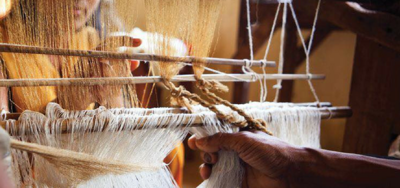
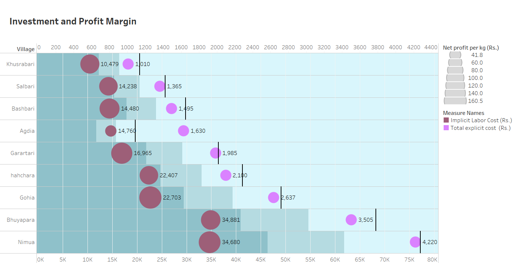
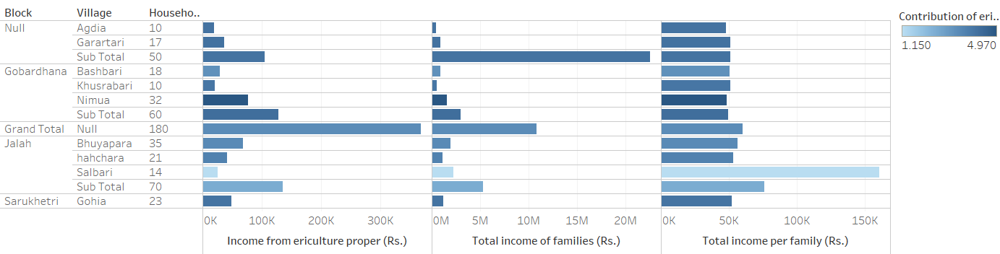
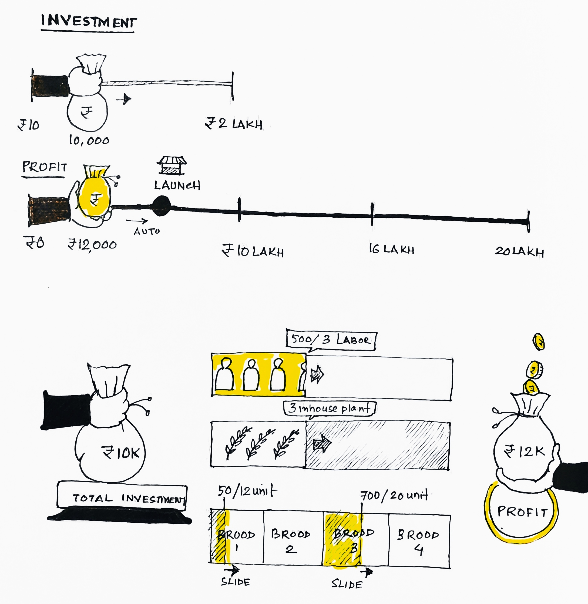
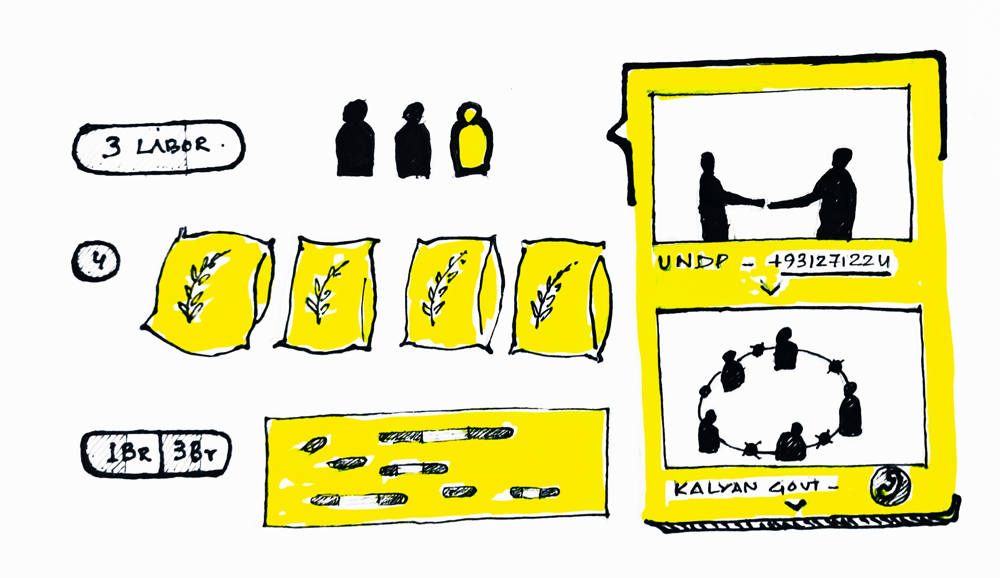

Handloom Industry Economics

Connecting Muga , Eri and Mulberry SILK Handloom Industry Artisans of Northeast India (Assam) to direct income revenue streams

Clusters income

Increase your Market Share Profit

GREAT !
Lets Connect to increase your market share
